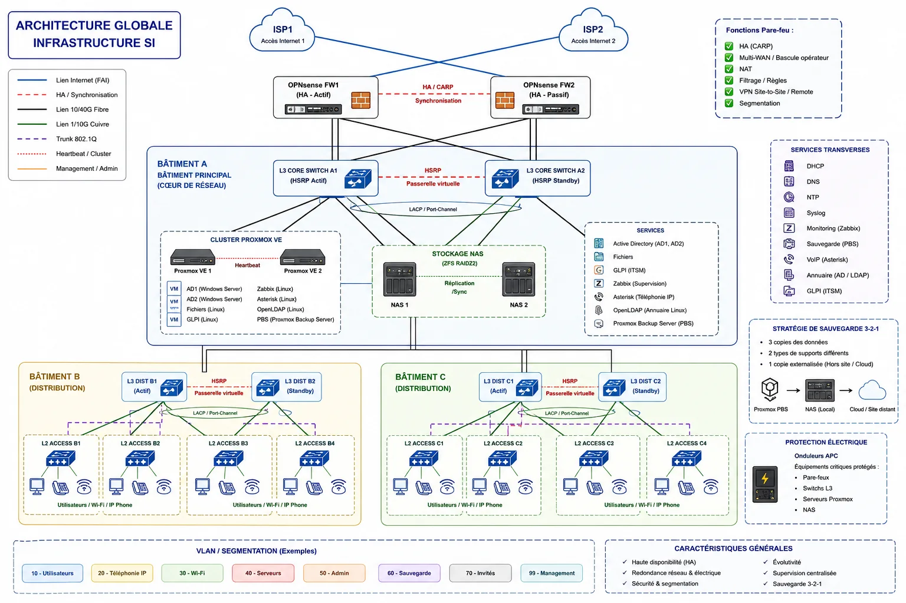

Conception d’une infrastructure SI sécurisée & redondante multi-bâtiments
Projet annuel de deuxième année de BTS SIO SISR. Au sein d’une équipe de cinq étudiants, j’ai occupé le rôle de Chef de projet SI : recherche technologique, élaboration de l’architecture globale, réflexion sur la redondance et l’implantation, cohérence entre les briques et défense des choix lors de la soutenance.

Une étude d’architecture, pas un déploiement fictif
Le projet consistait à concevoir une infrastructure professionnelle pour une entreprise répartie sur trois bâtiments, puis à présenter et justifier les choix devant un jury. L’infrastructure n’a pas été déployée physiquement ni simulée de bout en bout : la valeur du projet réside dans l’analyse, la recherche, la conception, le dimensionnement et la compréhension des dépendances entre les différentes briques du SI.
Chef de projet SI : une vision transverse
Mon travail portait principalement sur la cohérence globale du projet et la capacité à relier les besoins aux solutions techniques. La soutenance m’a amené à comprendre l’ensemble de l’architecture, et pas uniquement une technologie isolée.
Analyse des besoins
Étude du cahier des charges, contraintes de disponibilité, sécurité, performance, continuité et évolutivité.
Recherche technologique
Comparaison de solutions et recherche de technologies adaptées : virtualisation, pare-feu, réseau, stockage, cloud et services.
Architecture globale
Élaboration du schéma reliant Internet, pare-feux, cœur réseau, distribution, accès, serveurs, stockage, sauvegarde et services.
Implantation physique
Conception des plans des bâtiments et étages afin de positionner les locaux techniques et la salle serveurs de façon cohérente.
Redondance & dimensionnement
Recherche des points uniques de défaillance et réflexion sur les capacités nécessaires selon le rôle des équipements.
Soutenance
Présentation descendante de l’infrastructure et défense des choix techniques devant le jury, du double accès Internet jusqu’aux sauvegardes.
Trois bâtiments, une infrastructure cohérente
Le bâtiment A héberge le cœur du SI. Les bâtiments B et C disposent chacun d’une distribution redondante reliée au cœur. L’objectif est d’éviter qu’un unique opérateur, pare-feu, switch cœur ou hôte de virtualisation ne concentre à lui seul toute la disponibilité du système d’information.
Deux opérateurs ISP, deux OPNsense en haute disponibilité, CARP, Multi-WAN, filtrage, NAT et VPN.
Deux Cisco L3 CORE dans le bâtiment A avec HSRP, puis deux L3 de distribution dans chacun des bâtiments B et C.
Huit switchs L2, trunks 802.1Q, uplinks redondants, STP/RSTP, QoS et VLAN dédiés aux usages sensibles.
Deux hôtes Proxmox VE, AD1/AD2, services Linux, GLPI, Zabbix, Asterisk, OpenLDAP, PBS et deux NAS dédiés.
Les choix structurants de l’architecture
HSRP
Passerelle virtuelle redondante au niveau du cœur et de la distribution pour limiter l’impact d’une panne d’un équipement L3.
VLAN
Utilisateurs, téléphonie IP, Wi-Fi, serveurs, administration, sauvegarde, invités et management sont séparés logiquement.
Proxmox VE
Deux hôtes physiques sont prévus afin de centraliser les services tout en évitant la dépendance à un unique serveur.
ZFS / RAIDZ2
Deux NAS distincts des hyperviseurs apportent intégrité, snapshots, gestion du stockage et tolérance à deux pannes de disque par groupe RAIDZ2.
Sauvegarde 3-2-1
PBS, stockage NAS local puis copie externalisée vers un site distant ou un stockage cloud.
Protection électrique
Des UPS sont prévus pour les pare-feux, le cœur réseau, les hôtes Proxmox et les NAS, avec extinction contrôlée en cas de coupure prolongée.
Des plans pour matérialiser l’infrastructure
En complément du schéma logique, j’ai travaillé sur des plans conceptuels des six niveaux. Ils ne constituent pas des plans d’exécution architecturale : ils servent à matérialiser les zones de travail, les circulations, les locaux techniques et la salle serveurs nécessaires à l’étude.
Bâtiment A — bâtiment principal
Rez-de-chaussée
Implantation des bureaux et de la salle technique, pensée pour accueillir les équipements de proximité et le brassage du bâtiment principal.
1er étage
Le bâtiment A concentre le cœur du SI. Une salle serveurs dédiée est représentée avec les espaces de travail et de réunion.
Bâtiment B — distribution
Rez-de-chaussée
Le local technique représente la zone destinée au brassage et aux équipements de distribution du bâtiment B.
1er étage
Deuxième niveau de bureaux avec circulation, sanitaires, local technique et raccordement logique vers la distribution du bâtiment.
Bâtiment C — distribution
Rez-de-chaussée
Organisation tertiaire intégrant un local technique dédié aux équipements de distribution et aux liaisons vers le bâtiment A.
1er étage
Deuxième niveau du bâtiment C, conçu dans la même logique : espaces utilisateurs, circulation et zone technique identifiable.
De l’analyse à la soutenance
Une architecture justifiée, pas une liste de technologies
Retenu dans l’étude face à Hyper-V et VMware vSphere comme compromis entre coût, compatibilité Linux, simplicité d’administration et fonctions utiles au projet.
Étudié pour la haute disponibilité CARP, le Multi-WAN, le filtrage, le NAT, les VPN et la segmentation.
Choix lié aux fonctions de routage, VLAN, HSRP, trunks 802.1Q, STP/RSTP, QoS et agrégation de liens.
ZFS/RAIDZ2 pour le stockage local et logique 3-2-1 avec une copie externe. Le fournisseur cloud final reste volontairement générique dans l’architecture.
Compétences mises en évidence
Conception SI
Architecture globale, dépendances, haute disponibilité, résilience et réflexion sur les points uniques de défaillance.
Réseau
Organisation cœur / distribution / accès, HSRP, VLAN, interconnexion multi-bâtiments et redondance.
Systèmes & données
Virtualisation, services d’annuaire, supervision, ITSM, VoIP, ZFS/RAIDZ2, sauvegarde et externalisation.
Analyse
Recherche technologique, comparaison de solutions, dimensionnement et justification des choix.
Gestion de projet
Vision transverse et cohérence entre réseau, systèmes, sécurité, stockage, sauvegarde et besoins métiers.
Communication
Présentation structurée et défense des choix techniques devant un jury lors de la soutenance annuelle.
Consulter le dossier technique complet
Le PDF de 15 pages détaille le contexte, mon rôle de Chef de projet SI, l’architecture finale, les six plans de niveaux, la segmentation, les choix technologiques, le dimensionnement, la soutenance et les limites de l’étude.